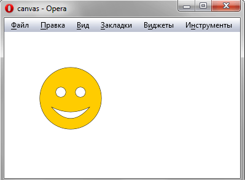

- История HTML
- DocType
- Структура HTML-документа
- Метатеги
- Текст
- Списки
- Отличия тега B от тега Strong
- Рисунки
- Таблицы
- Ссылки
- Map-карта
- Отличия тега div от тега span
- Отличия frame от iframe
- Формы
- Вставка мультипликации
- Обзор HTML5
- Тег канвас
- Универсальные атрибуты*
|
Создает область, в которой при помощи JavaScript можно рисовать разные объекты, выводить изображения, трансформировать их и менять свойства. При помощи тега <canvas> можно создавать рисунки, анимацию, игры и др.
- height - задает высоту холста. По умолчанию 300 пикселов.
- width - задает ширину холста. По умолчанию 150 пикселов.
- Доступны универсальные атрибуты*
| Пример кода |
Результат |
<!DOCTYPE html>
<html>
<head>
<title>canvas</title>
<meta charset="utf-8">
<script type="text/javascript">
window.onload = function() {
var drawingCanvas = document.getElementById('smile');
if(drawingCanvas && drawingCanvas.getContext) {
var context = drawingCanvas.getContext('2d');
// Рисуем окружность
context.strokeStyle = "#000";
context.fillStyle = "#fc0";
context.beginPath();
context.arc(100,100,50,0,Math.PI*2,true);
context.closePath();
context.stroke();
context.fill();
// Рисуем левый глаз
context.fillStyle = "#fff";
context.beginPath();
context.arc(84,90,8,0,Math.PI*2,true);
context.closePath();
context.stroke();
context.fill();
// Рисуем правый глаз
context.beginPath();
context.arc(116,90,8,0,Math.PI*2,true);
context.closePath();
context.stroke();
context.fill();
// Рисуем рот
context.beginPath();
context.moveTo(70,115);
context.quadraticCurveTo(100,130,130,115);
context.quadraticCurveTo(100,150,70,115);
context.closePath();
context.stroke();
context.fill();
}
}
</script>
</head>
<body>
<canvas id="smile" width="200" height="200">
<p>Ваш браузер не поддерживает рисование.</p>
</canvas>
</body>
</html>
|

|
|